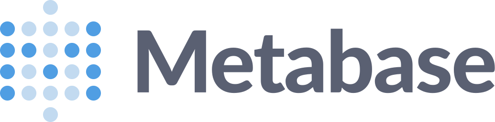
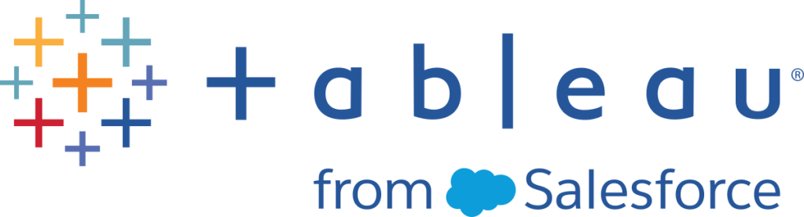

Dar dirección al crecimiento
Análisis de clientes, embudos, cohortes y retención para orientar prioridades de Growth y producto. Del perfil de cliente ideal a señales comerciales como Share of Hiring.
Ayudo a equipos a decidir dónde crecer, construir una medición confiable y aplicar IA a su operación.
Economista Data Analyst → Head of Analytics en Torre
Cómo puedo aportarDesde una función de Analytics, Growth o producto, o en una colaboración por proyecto.
Mi experiencia como Head of Analytics conecta prioridades de negocio, ejecución técnica y capacidades para otras personas.
Ver ejemplos prácticosAnálisis de clientes, embudos, cohortes y retención para orientar prioridades de Growth y producto. Del perfil de cliente ideal a señales comerciales como Share of Hiring.
Creación y mantenimiento de dashboards, definiciones compartidas e infraestructura analítica. Conecto SQL, dbt, AWS y Metabase con documentación para que el equipo pueda hacer sus propios análisis.
Agentes para observación y diagnóstico, automatizaciones y skills reutilizables. Combino implementación, evaluación y capacitación, desde los fundamentos hasta analytics con IA.
Ejemplos de apoyo para tu empresa o proyecto. Partimos de una necesidad concreta y adaptamos el alcance a tu equipo, tus datos y tu etapa.
Tu situaciónTu equipo quiere usar IA, pero no sabe por dónde empezar ni cómo revisar sus respuestas.
Tu situaciónCada semana alguien descarga archivos, copia datos y arma el mismo reporte a mano.
Tu situaciónQuieres entender por qué los clientes abandonan, dónde se pierde una conversión o qué segmento conviene priorizar.
Tu situaciónEl equipo consulta varias hojas de cálculo y cada área presenta una cifra distinta.
Tu situaciónTu equipo repite investigaciones, revisiones de información o diagnósticos que requieren consultar varias fuentes.
Tu situaciónUn reporte se queda desactualizado, una consulta tarda demasiado o nadie sabe qué significa un campo.
Podemos empezar por un taller, un diagnóstico o un proceso concreto.
Hablemos de tu proyectoExperiencias que conectan preguntas de negocio, ejecución técnica y capacidades para el equipo.
14 casos disponibles
¿Qué proporción de las vacantes observables de una organización aparece en Torre y qué actividad externa puede señalar una oportunidad comercial?
Trabajé en la definición de la métrica y en un sistema distribuido entre datos, captura web y agentes especializados. Conecté contratos de evidencia, validación de fuentes, deduplicación y comparación con Torre, además de escritura controlada y lectura posterior para verificar los resultados.
Construí una base para convertir investigación dispersa en señales comerciales trazables. El proceso distingue una medición respaldada de una cobertura incompleta; mide vacantes observables, no contrataciones cerradas.
Una decisión depende de más que la gráfica: ingesta, modelos, orquestación y publicación tienen que funcionar juntos.
Contribuí a la evolución y el mantenimiento de la plataforma de datos y de los procesos que actualizaban la información analítica. Trabajé en diagnóstico de replicación, frescura, materializaciones, timeouts y presión de disco; también en análisis de capacidad y costos de AWS.
Conecté síntomas en BI con sus causas en la plataforma y documenté controles, rutas de diagnóstico y oportunidades de mejora para sostener la operación analítica.
Distintos equipos necesitaban consultar Growth, producto y segmentos con métricas coherentes y vistas que siguieran siendo útiles al evolucionar el negocio.
Creé y mantuve dashboards y reportes en Metabase; trabajé con indicadores generales de negocio, crecimiento, segmentos del mercado laboral y reportes para clientes. Ajusté SQL, filtros, ventanas, segmentación y definiciones; revisé paridad entre fuentes, modelos y gráficas.
Entregué superficies de seguimiento diario, semanal y mensual, alineé definiciones entre los tableros de crecimiento y los indicadores generales del negocio y desarrollé vistas segmentadas para apoyar decisiones compartidas.
Disponer de tablas no basta cuando el significado de los campos, las relaciones y el origen de las métricas viven en la cabeza de pocas personas.
Contribuí a documentar y sincronizar la metadata: las descripciones de los datos, sus campos y relaciones. Conecté esa documentación con dbt y su publicación en Metabase. Trabajé sobre descripciones de tablas y columnas, relaciones, snapshots y trazabilidad del origen.
La cadena documentada alcanzó cobertura completa en el universo revisado. Esta base permitió explorar datos con más contexto y habilitó análisis de autoservicio dentro de la empresa.
Un pipeline puede terminar correctamente y seguir entregando datos desactualizados. Detectarlo requiere revisar varias capas y conservar evidencia.
Desarrollé y afiné, con asistencia de IA, agentes para monitorear y diagnosticar sistemas de datos: reglas de operación, trazabilidad, herramientas, instrucciones y pruebas que reproducen escenarios de fallo. Definí qué observar, cómo evaluar el resultado y cuándo escalar a una persona.
Avancé hacia una operación analítica más autónoma en recopilación de evidencia, observación, diagnóstico y preparación de acciones. Las intervenciones críticas mantienen controles de aprobación.
¿Qué características comparten los clientes a los que podemos servir mejor y cómo ayudan a priorizar producto y esfuerzos comerciales?
Trabajé en el Ideal Customer Profile (ICP), o perfil de cliente ideal: las características de las organizaciones a las que el producto puede aportar más valor. Lo analicé por producto y segmento del mercado laboral. Conecté actividad, inactividad, experiencia y ingresos; revisé poblaciones, definiciones de segmentos y criterios de priorización.
Aporté análisis que informaron conversaciones sobre el rumbo de la empresa, el foco comercial y las prioridades de producto: una base compartida para discutir a quién servir y dónde profundizar.
Una Atomic Network es una red mínima viable: el conjunto más pequeño de participantes cuyas interacciones ya generan valor. En empleo, estudié combinaciones de tipo de trabajo, ubicación y dedicación laboral para entender dónde se conectaban mejor empresas y candidatos.
Participé en la definición y revisión de métricas, dashboards semanales y mensuales, filtros de segmentos y automatización de actualizaciones. Conecté los modelos de datos, la programación de actualizaciones y los dashboards con la interpretación de cada red.
Desarrollé vistas más repetibles y segmentables para seguir Atomic Networks y apoyar la discusión de foco. También investigué errores de clasificación de habilidades laborales y sus categorías para mejorar la calidad de la información analítica.
El cambio de proveedor requería mantener lecturas históricas, validar la nueva fuente y acordar cómo unir ambas durante la transición.
Revisé el corte temporal entre fuentes, detecté duplicados y un campo truncado, y coordiné su corrección con el proveedor. Participé en la validación y comuniqué la finalización de la migración.
La migración quedó completada con convivencia temporal de ambos procesos de carga. Se preservó la lectura histórica y el proveedor corrigió la longitud del campo detectado.
¿Quién vuelve a usar el producto y cómo distinguir abandono de no tener todavía una nueva necesidad?
Analicé cohortes —grupos de usuarios con un punto de inicio común— con ventanas comparables y separé usuarios en prueba, recurrencia y elegibilidad para volver. Revisé diferencias de comportamiento entre segmentos.
Documenté hallazgos y recomendaciones para el ciclo de vida del cliente que permitían interpretar la retención según la situación real del usuario y su momento dentro del producto.
Un incremento de interacciones podía parecer una mejora general, aunque no necesariamente ampliara la cobertura de vacantes.
Investigué volumen, umbrales y concentración, construí una lectura diferenciada y la acompañé de informes y dashboards de apoyo.
Identifiqué que intensificar actividad en vacantes ya atendidas podía coexistir con poca expansión de cobertura. Hice explícita la diferencia para orientar la interpretación de las métricas.
Los reportes recurrentes y las ventanas históricas amplias exigían consultas reutilizables y un rendimiento adecuado para quien las consumía.
Trabajé en métricas y reportes parametrizados para clientes, mantenimiento de tarjetas y diagnóstico de consultas lentas. Participé en el paso de consultas costosas a tablas precalculadas para acelerar las consultas y en pruebas de coincidencia de resultados con la fuente.
Entregué reporting reutilizable y una lectura histórica respaldada por modelos con resultados precalculados, con verificaciones de consulta y visualización en la entrega.
Un sistema con varios agentes necesita conservar estado, transferir trabajo y controlar qué puede ejecutar cada componente.
Contribuí al entorno de ejecución de agentes: transferencia de tareas y contexto, conservación del estado y controles sobre la asignación de trabajo. También trabajé en verificar el origen de sus componentes y en distribuir versiones fijas, dirigiendo y revisando implementación asistida por IA.
Los cambios y sus pruebas se integraron mediante pull requests fusionados. Añadieron controles concretos para transferir trabajo y acotar la ejecución entre agentes.
Retirar una capacidad de producto requiere atender lo que queda detrás: configuración, rutas de ejecución y datos que ya no deben persistirse.
Participé en el retiro gradual de una capacidad y en la eliminación posterior de su persistencia y rutas obsoletas. La contribución conectó código, configuración, pruebas y evolución de datos dentro de una entrega revisada.
Los cambios fueron fusionados en el repositorio del producto. El caso muestra mi capacidad para implementar una decisión de producto y atender sus implicaciones técnicas, además del análisis que la acompaña.
Una dependencia compartida debe funcionar con los entornos y las versiones que utilizan sus consumidores.
Contribuí a ajustes de una librería compartida relacionados con reglas de compatibilidad de PyArrow, una biblioteca para procesar datos, y Colab, un entorno para ejecutar código en cuadernos. Trabajé sobre dependencias e interfaces que conectan el código con su entorno de ejecución.
Las correcciones quedaron incorporadas mediante cambios fusionados. Esta experiencia amplió mi trabajo hacia mantenimiento de componentes compartidos y compatibilidad entre entornos.
Síntesis de contribuciones dentro de trabajo colaborativo. Se omiten datos comerciales e información interna de clientes.
Negocio, datos y sistemas.
Un mismo criterio.
Soy economista, con experiencia como Head of Analytics en Torre, y mi eje es Growth & Product Analytics. Allí, mi trabajo abarcó investigación de clientes, definición del perfil ideal de cliente, adquisición, conversión y retención; también la creación y el mantenimiento de dashboards, la infraestructura de analytics y el desarrollo de agentes.
Hay algo de LEGO en mi forma de construir sistemas: conectar piezas con funciones claras para resolver un problema y poder ampliar la solución después. La ingeniería y la IA amplían lo que puedo entregar al equipo: desde SQL, Python y modelos de datos hasta componentes de software integrados mediante Git y pull requests.
Perfil ideal de cliente, redes de empresas y candidatos, adquisición y retención para discutir prioridades de crecimiento y producto. También investigué fricción en el recorrido de candidatos y efectividad de notificaciones.
Modelos de datos, procesos de actualización, tableros y documentación que dan contexto a las decisiones del día a día.
Agentes de IA, automatizaciones y capacitación para convertir conocimiento en trabajo reutilizable.
Decisiones, incentivos y contexto.
Mi formación en Economía también está detrás de cómo analizo un negocio. Me interesa entender qué mueve a las personas, cómo influyen las reglas y qué opciones tiene una organización con los recursos que dispone.
Estos son mis intereses particulares y cómo pueden complementar mi trabajo en Growth, producto y analytics:
Trabajé a lo largo de la cadena analítica de Torre, conectando mantenimiento de infraestructura, transformación de datos y consumo por los equipos.
Esquema simplificado del recorrido de datos.
Replicación y continuidad de las fuentes.
 Redshift
RedshiftAlmacenamiento, capacidad y diagnóstico operativo.

Transformación de datos, tablas precalculadas y tareas programadas.

EquiposDashboards, metadata y análisis de autoservicio.
Diagnóstico de frescura, replicación, timeouts, presión de disco y dependencias. Revisión de capacidad y costos de AWS, documentación operativa y controles para seguir la causa de un problema hasta su origen.
Creación, mantenimiento y evolución de dashboards: tableros visuales para seguir indicadores del negocio, crecimiento, segmentos del mercado laboral y resultados para clientes. SQL, filtros, cohortes, segmentación y definiciones comunes para la toma de decisiones. Alineé la medición de nuevos clientes entre Growth y los indicadores generales de la empresa; también construí y adapté reportes para clientes con consultas parametrizadas.
Metadata —descripciones sobre el significado y el origen de los datos— publicada en el catálogo de datos y en Metabase para que otras personas puedan entender tablas, campos, relaciones y métricas. Documentación conectada a dbt, trazabilidad y verificación de publicación para facilitar sus propios análisis.
Desarrollo sistemas con agentes para automatizar trabajo de analytics: revisar infraestructura, monitorear KPIs, investigar señales y preparar acciones con evidencia.
Mi trabajo en Torre conectó estas capacidades a lo largo de la cadena de datos: ingesta y AWS, SQL y dbt, procesos de Airflow y dashboards de Metabase.
Demo interactiva · ejemplos ilustrativos
La tarea de actualización terminó con éxito, pero el dashboard sigue desactualizado.
Fuentes: Airflow y logs · dbt y SQL · MetabaseContrastar la ejecución con la frescura del dato de origen, la transformación y el consumidor final.
Identificar la capa que necesita atención y preparar el diagnóstico y la acción propuesta para revisión.
El agente prepara evidencia. La persona conserva el control de las intervenciones.
El valor está en conectar el modelo con el trabajo real: fuentes, herramientas, contexto, pruebas y continuidad.
Explorar el entorno de ejecuciónPara tu equipo: convertir revisiones repetitivas en señales investigadas y propuestas de acción, con contexto suficiente para decidir.
He impartido capacitación desde los fundamentos de agentes, skills y automatizaciones hasta analytics con IA. Diseño prácticas a partir de tareas reales para que cada persona aprenda a elegir herramientas, dar contexto y crear soluciones para su función.
Objetivo: equipos más autónomos para analizar información, automatizar tareas y compartir lo que aprenden. Cada taller deja ejercicios y recursos que pueden seguir usando en su trabajo.
De un ejercicio guiado a una forma de trabajar que el equipo puede repetir.
Elige un rol para ver cómo una tarea real se convierte en práctica guiada.
Mostrando la ruta de capacitación para Growth y Marketing.
La persona practica cómo pedir una primera lectura y decidir qué quiere mover, para quién y con qué señal sabrá si vale la pena continuar.
Priorizar una campaña o una oportunidad de crecimiento para la siguiente semana.
Brief, segmento, objetivo, restricciones y datos disponibles; se practica una skill para resumir, preguntar y distinguir evidencia de suposición.
Tabla de hipótesis con fuente, audiencia, señal esperada, riesgo y siguiente experimento; la persona explica qué cambiaría antes de ejecutarlo.
Reescribir un brief real en tres versiones: pregunta, contexto mínimo y criterio de decisión.
El equipo aprende a conectar entradas, herramientas y pasos para preparar reportes o dar seguimiento a solicitudes, con revisión en las decisiones que la necesitan.
Preparar un reporte recurrente, clasificar solicitudes o dar seguimiento a una cola de trabajo.
SOP, entradas, estados, responsables y reglas de excepción; se ensaya una automatización con checklist, registro y punto de escalamiento.
Flujo documentado, lista de casos que requieren revisión y evidencia de qué se ejecutó, qué faltó y quién decide el siguiente paso.
Marcar en un proceso real qué pasos son mecánicos, cuáles tienen riesgo y dónde debe detenerse la automatización.
Usar IA para formular preguntas, preparar consultas, comparar segmentos y comunicar hallazgos con las definiciones de métricas del equipo.
Entender por qué cambia un indicador, comparar segmentos o decidir qué corte explorar primero.
Diccionario de métricas, modelo semántico, consulta y límites de acceso; se usa una skill para formular, consultar y validar.
Análisis reproducible con definición, consulta o pasos, hallazgo, incertidumbre y una recomendación separada del dato observado.
Tomar una métrica conocida y escribir su ficha: qué cuenta, qué excluye, qué reloj usa y cómo se comprobaría.
Convertir información dispersa en un resumen ejecutivo: escenarios, prioridades, supuestos y próximos pasos para una conversación de dirección.
Preparar una decisión sobre foco, capacidad, inversión o el siguiente experimento de la organización.
Objetivo, restricciones, señales disponibles y desacuerdos; se practica un brief de decisión con evidencia y preguntas abiertas.
Opciones con trade-offs, supuestos, riesgos, responsable y fecha de revisión; el documento deja visible qué todavía no se sabe.
Convertir una decisión pendiente en una página: señal, opciones, criterio, dueño y qué evidencia cambiaría el rumbo.
El taller alterna una demostración breve, trabajo sobre una tarea del equipo y una lectura conjunta de la salida.
Elegir algo que la persona ya hace y puede describir con sus propios criterios.
Separar objetivo, entradas, herramientas, límites y quién revisa antes de automatizar.
Guardar la skill o el procedimiento, probar un caso distinto y decir por qué la salida merece confianza.
Recursos para seguir aplicando lo aprendido:
Una tarea resuelta y piezas para seguir construyendo: contexto, una skill reutilizable y criterios para revisar el resultado. El equipo puede combinarlas y adaptarlas a su siguiente reto.
resumen-semanal
Reúne avances, identifica bloqueos y prepara un resumen con fuentes y próximos pasos. Un ejemplo de instrucciones que cada equipo puede adaptar y reutilizar.
Del análisis a construir
capacidad para otros.
Data Analyst → Head of Analytics
Mi responsabilidad evolucionó de producir análisis a sostener definiciones, dashboards y continuidad de la medición para otros equipos. Investigación de clientes e ICP, análisis de comportamiento y Atomic Networks; creación y mantenimiento de dashboards, modelos y reporting. Evolución hacia infraestructura de analytics, metadata para autoservicio, automatización y desarrollo de sistemas con agentes. Contribuciones de software entre repositorios: entornos de ejecución de agentes, retiro de capacidades de producto y compatibilidad de librerías compartidas.
Analista · feb. 2023 — ene. 2024
Desde mi etapa como analista ya automatizaba labores de consultores. Ese trabajo marcó una constante de mi trayectoria: entender un proceso, identificar tareas repetibles y construir una forma más útil de ejecutarlas.
Business and Community Development · ene. 2021 — oct. 2024
Experiencia en desarrollo de negocio y comunidad dentro de una iniciativa de formación en inteligencia artificial para programadores en Latinoamérica.
Formación en la Universidad Autónoma de Baja California. Una base para analizar incentivos, cuestionar supuestos y conectar evidencia con decisiones de negocio.
Participación en Proyecto Tlali.
Parte de la mesa central
Formo parte de la mesa central de Proyecto Tlali, una organización que impulsa iniciativas de apoyo comunitario en Tijuana. Mi participación combina logística, recolecciones, comunicación, estrategias de crecimiento y analítica.
La cobertura de Opinia sobre la colecta de diciembre de 2025 recoge mi participación en la convocatoria ciudadana.
Cursos y especializaciones seleccionados de mi perfil de LinkedIn, con acceso a sus credenciales. Complementan la experiencia aplicada en los casos anteriores.

TableauSi buscas sumar estas capacidades a tu equipo o resolver un proyecto de analytics, automatización o capacitación en IA, conversemos.